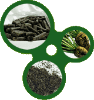

|


|
|
Beet Pulp is the fibrous portion left after the sugar has been removed from the sugar beet. It is mechanically pressed, dried to reduce the moisture content and then pelletized into a 5/16inch pellet. The fiber in Beet Pulp is highly digestible making it a good non-starch energy source
Variation may occur depending on source
| |
|
|
| Dry Matter |
|
90.73% |
| Moisture |
|
9.27% |
| Protein, Crude |
8.29 |
7.52% |
| Fiber, Crude |
16.97 |
15.42% |
| ADF - Acid Detergent Fiber |
26.68 |
24.22% |
| NEL - Net Energy Lactation |
0.72 |
0.65 Mcal/lb |
| NEG - Net Energy Gain |
0.46 |
0.41 Mcal/lb |
| NEM - Net Energy Maintenance |
0.78 |
0.71 Mcal/lb |
| TDN - Total Digestible Nutrients |
69.40 |
63.04% |
| Fat |
1.09 |
1.00% |
| Ash |
7.56 |
6.86% |
| NFE - Nitrogen Free Extract |
66.09 |
60.03% |
| Calcium |
1.00 |
0.91% |
| Phosphorus |
0.07 |
0.06% |
| Potassium |
0.56 |
0.51% |
| Reducing Sugars |
2.60 |
2.39% |
| Sucrose |
8.96 |
8.15% |
| TSI - Total Sugars as Invert |
8.23 |
7.43% |
|
In growing and finishing diets, Beet Pulp pellets can replace corn silage or other forages. For stock cows, they can fill energy requirements and stretch homegrown forage supplies. In dairy rations, Beet Pulp offers and excellent source of structural carbohydrates, lowers the potential for rumen acidosis and improves butter-fat test.
Beet Pulp Pellets can be stored by unloading on a cement slab, preferably covered, or they can be stored in conventional hopper bottom bins. They can be transferred in hopper, end-dump or live bottom trucks. Feeding and handling will depend on the method of storing and the feeding systems available but they can be easily handled in traditional automated systems or front-end loader mixer wagon combinations.
back to Products
|
|
|
|